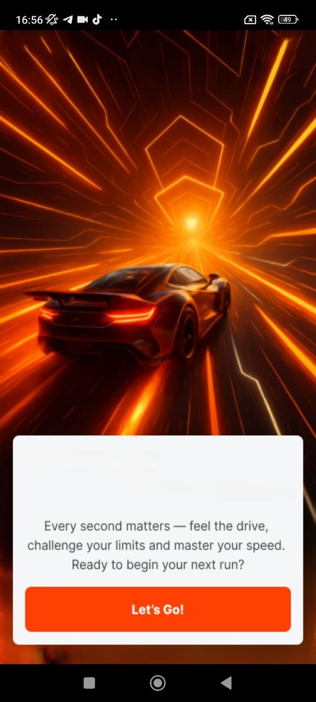
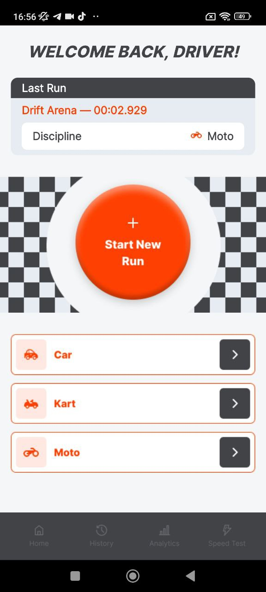
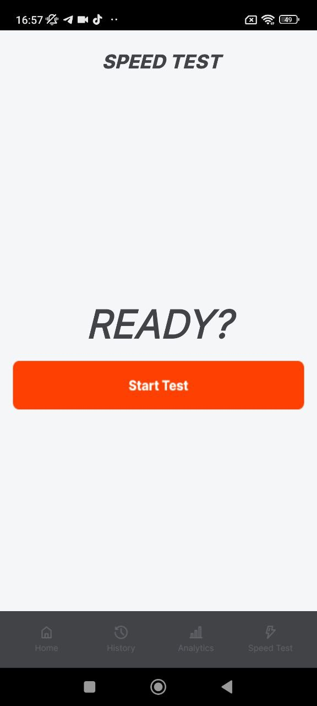

Precision Timing
Track lap times with a focused interface that removes distractions and keeps only the important metrics visible.
Misli Sport Driver is built for drivers who care about lap timing, consistency, progress tracking and clean racing analytics.


Misli Sport Driver focuses on clarity, speed and performance analytics so you can understand every run and improve session after session.
Track lap times with a focused interface that removes distractions and keeps only the important metrics visible.
Review every session in a structured timeline and compare runs over time.
Use analytics to detect improvements and understand where your performance changes.
The app focuses on clarity and simplicity. Instead of overwhelming drivers with complex telemetry, it provides meaningful insights that help improve real performance.
Minimal distractions while tracking runs.
Understand performance trends easily.
Analyze results after every run.
Track improvement over time.
Download Misli Sport Driver and keep your race sessions, run reviews and performance analytics in one mobile app.

Misli Sport Driver helps racers stay focused on what matters: cleaner sessions, faster review, and better decisions on every run.
The app is designed for fast setup, simple tracking, and easy review so you can spend less time navigating and more time driving.